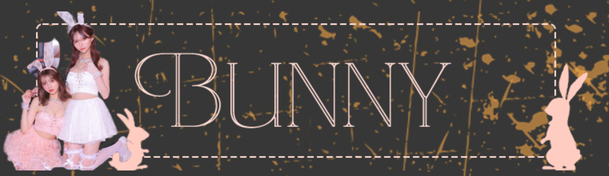
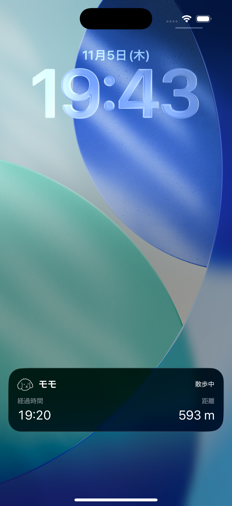
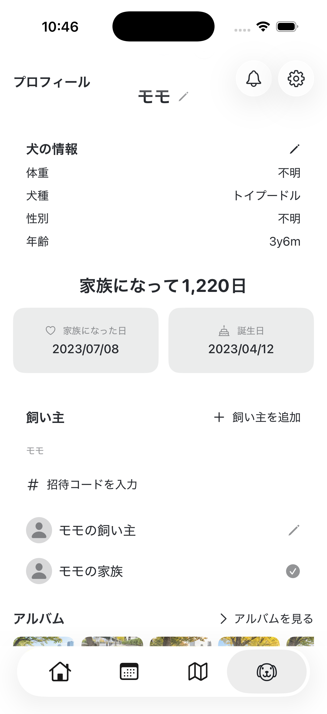
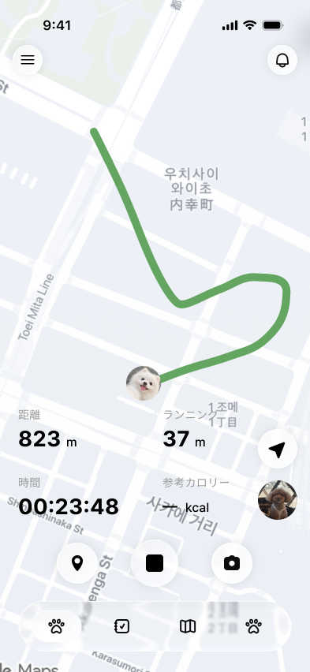

散歩を始めてから保存するまで
登録 散歩開始 保存
 YOHAN KIM / 2026
YOHAN KIM / 2026Yohan Kim
EC SITE / 2025.07–2026.02
買い物の導線改善
特集、ホーム、商品ページを見直しました。
行動データを分析し、画面設計から変更後の検証まで担当しました。
 Photoshop
Photoshop Figma
Figma Cursor
Cursor Clarity
Clarity Google Analytics
Google Analytics Search Console
Search Console
1-1 / 2025.09–11
デザインを見直して商品一覧へ進みやすくしました。

1-1 / 改善項目 01 / 2025.09
カテゴリを横スクロールで選べるメニューを設け、
全商品とセールへのリンクを追加しました。


1-1 / 改善項目 02 / 2025.09
バナーのデザインが古くなっていたため、作り直しました。
BEFORE



AFTER


1-1 / 改善項目 03
まず各カテゴリを9点から6点に減らし、シーズン終了後にタブで選べる形にしました。


1-1 / 改善項目 04 / 2025.09–2025.10
Clarityでは末尾の「次のページ」にタップが集まっていました。
商品を探し続けられるよう、フッターに3つの入口を設けました。


1-2 / ヘッダーナビゲーション改善 / 2026.02
検索・お気に入り・カートを上段に残し、新作・ランキングは下段へ。
ブログはホームの最新記事バナーに移しました。

1-3 / 2026.02
セール対象外の主力ブランドをメインバナーに。セールはその下の小さなバナーに移しました。


1-3 / 簡単検索
Clarityでは、スマホの上部リンクと中段左の画像カテゴリがよく押されていました。
これらを検索フォームとともにファーストビューへまとめました。

1-3 / 変更前後
ブランドバナーと簡単検索をファーストビューに配置しました。


1-4 / 2025.08.08–08.20
直近24時間の閲覧人数を商品詳細に表示すると、購入率は変わるか。
2標本比率のZ検定（p > 0.05）。短期間・少人数のテストでした。
iOS APP / 2026.10.04–現在
散歩の記録を家族と共有
散歩の様子を家族があとから見られるiOSアプリです。
Figma Codex
Codex

ワングラム / 背景
夫婦で勤務時間が違い、散歩は交代で担当しています。
離れて暮らす家族にも、その日の様子を伝えたいと考えました。


ワングラム / 散歩の記録
距離と時間に加え、歩いた道と撮った写真を順にたどれます。


ワングラム / ホーム
予定や地図も載せる案から、散歩の開始と記録の確認に絞りました。

ワングラム / キャラクター
犬種を選ぶと、ホームのキャラクターが変わります。


ワングラム / Live Activities
ロック画面とDynamic Islandに散歩の状況を表示し、タップで散歩画面に戻れます。


ワングラム / テストで見つかった課題
犬の情報より上に家族の情報を置き、そこから飼い主のプロフィールを開けるようにしました。



ワングラム / テスト後の見直し
テスト版では、撮影した写真を現在地ボタンの下に表示し、
タップで全画面表示できるようにしました。


WEB APP
作業の記録をひとつに
デザイン、コード、文書の変更をまとめるサービスです。画面づくりと開発を一人で担当し、公開後のデータも確認しました。
Figma Notion
Notion GitHub
GitHub VercelCodex
VercelCodex Claude Code
Claude Code
Snapside / 制作の背景
ひとりで開発していると、何を変えたかを書き残すのを忘れがちでした。
そこで、すでに各ツールに残っている履歴を使いました。


Snapside / 画面設計
Overviewで更新のあったツールや日を見つけ、詳しく知りたい作業の履歴を開きます。
Thank you.
ご覧いただき、ありがとうございました。